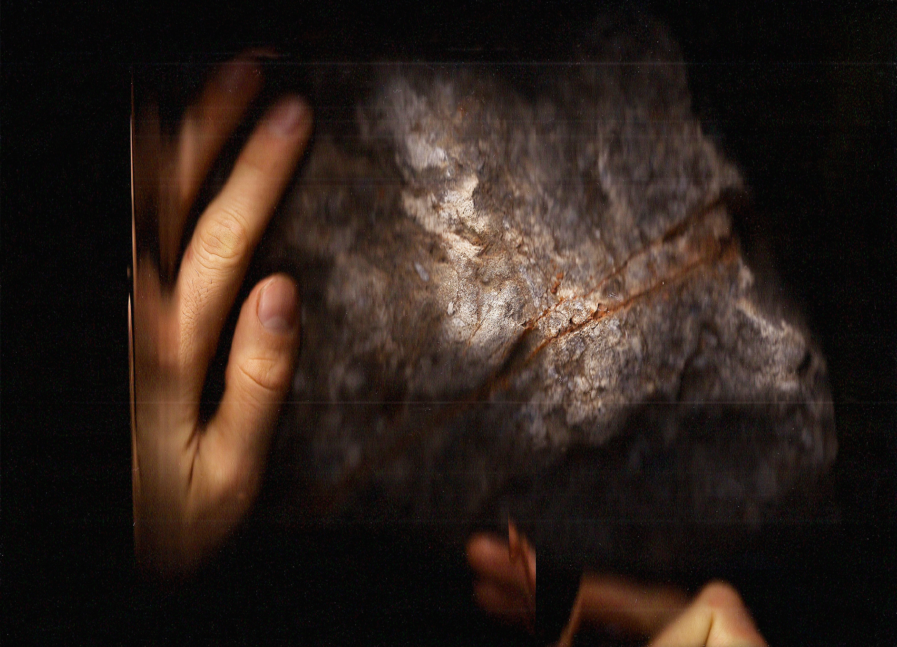
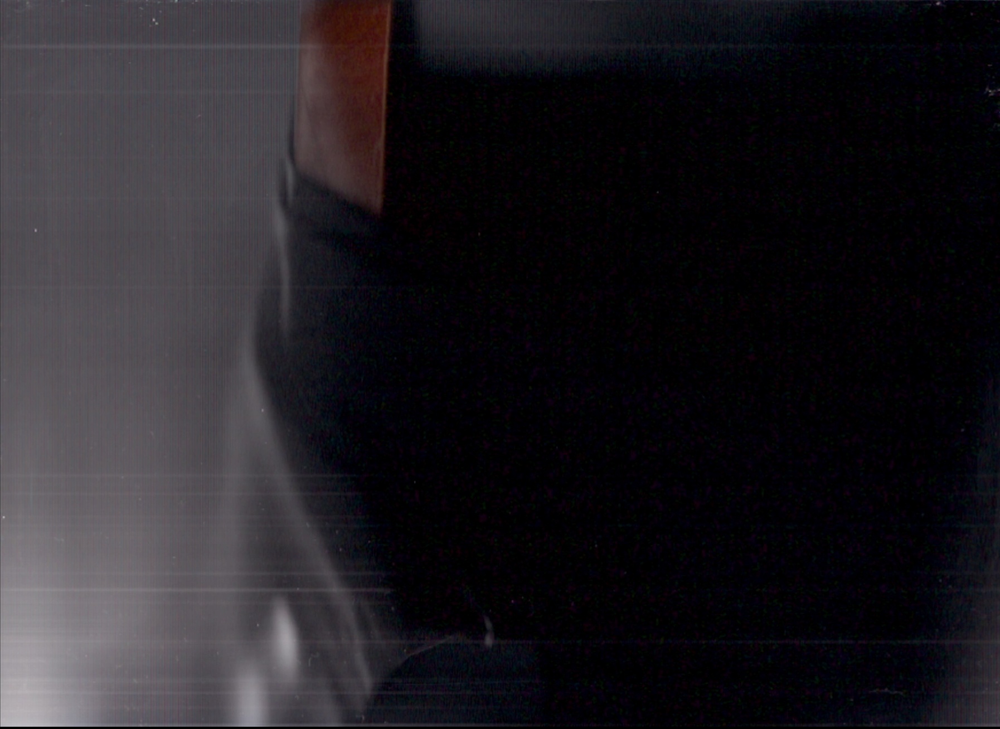

sleepwalk, 2021.
sleepwalk tend vers un mode d’attention moléculaire en explorant un état voisin du rêve. L’espace de mon appartement est strié, applati et fragmenté par un scanneur, puis réorganisé suivant le spectre des sons enregistrés dans ma chambre dans la nuit du 2 mars. Les patterns involontaires générés par ma respiration, les mouvements de mon corps endormi et les bruits de la rue déterminent l'emplacement de chacune des coupes dans le diaporama vidéo. Un somnambulisme différé et médié. En résulte une attention accrue au presque-imperceptible, aux détails habituellement repoussés dans le hors-champ par les hiérarchies internes du regard. Poussières, flux, textures, états transitoires.

